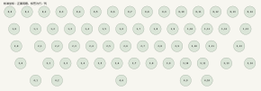

English | 中文
E73 右下角 PCB 对应固件
使用 hardware/e73-hhkb-corner/firmware/ 内的 CORNER-05 构建，包括 manifest.json、releases/normal/yeti60-e73.hex 正常版及 releases/calibrator/yeti60-e73.hex 校准版。根目录迁移前固件和 Raytac 固件不匹配本板的校准身份。右下角审查中的设计暂停放行条件仍有效。
当前原生布线、USB 参考地及有界装配检查完成后，重现方式为：
uv run --python 3.14.7 --with-requirements requirements-audit.txt python scripts/build_e73_corner_firmware.py
python3 scripts/check_e73_corner_firmware.py
构建需要锁定版本的 ZMK 工作区、固定摘要的 Docker 镜像，以及正在运行的 Docker 服务。脚本在忽略目录内隔离构建，检查两份 ARM 链接产物，运行核心、校准、USB、GPIO、扫描、按键事件、NVS、恢复及 RC 灵敏度测试，并执行链接目标和套件故障注入测试，通过后才复制固件。--prepare-only 仅准备引脚契约；--development-build 仅在忽略目录构建测试，不发布镜像。
首次通过 SWD 写入时使用 HEX，其中包含将 NFC 引脚释放为 GPIO 的 UICR 记录，BIN 不包含这项显式记录。应用从地址零开始，不假定存在 UF2 引导程序。连接探针前必须核对自定义 J3 针序。按现有校准步骤操作，但替换为本候选版 HEX：先刷校准版，完成全部 60 键并保存，再刷正常版，保留最后 64 KiB 设置分区。全片擦除会丢失校准和蓝牙配对；PCB 指纹变化必须重新校准。
两份固件均使用内部低频 RC 时钟和 REG1 LDO。主机完成配置后，可同时充电和使用 USB HID，并优先走 USB；挂起时关闭充电器输入，拔线后允许回退蓝牙。这些是链接产物及主机模型检查，尚无实物 USB、蓝牙、静电容、充电、温升或无线验收。电量上报仍待电池及测量集成完成后启用。被动 RC 模型采用假定寄生参数，并非 PCB／NiZ 提取电容。
固件清单 · 正常版 HEX · 校准版 HEX
使用 J-Link 首次刷写
安装 SEGGER J-Link 软件，探针使用 3.3 V 目标逻辑。通过已检查的电源路径供电，打开 SW100，先确认 3.3 V。J3 的 1 脚是 VTref，不是探针供电输入；2／3／4／5／6 分别为 SWDIO／GND／SWDCLK／RESET_N／GND。不要同时接入两个互相竞争的 5 V 电源。
在包含本版固件清单及 releases/ 的目录打开终端：集中交付版为 05-firmware/，仓库内为 hardware/e73-hhkb-corner/firmware/。启动 Commander，Windows 程序名为 JLink.exe：
JLinkExe -device nRF52840_xxAA -if SWD -speed 1000 -autoconnect 1
在提示符下写入校准版：
r
h
loadfile releases/calibrator/yeti60-e73.hex
r
g
q
确认下载／校验成功。这是按工具文档给出的命令，不是本板的实物刷写通过记录。出厂锁定模组可能需要恢复，但恢复／全片擦除会清空设置，完成校准后的更新不得这样操作。代码分区为 0x00000～0xEFFFF，必须保留 0xF0000～0xFFFFF 的设置。更新前检查烧录器擦除计划并备份设置；若工具要求全片擦除，先停止并解决保留问题。HEX 已包含所需 UICR 记录，不会出现 UF2 拖拽盘。
逐键采样并安装正常版
连接电脑 USB 前物理断开台架电源。校准版提供 USB 日志／命令行接口，在串口终端打开对应端口，可设置为 115200、8N1、无硬件流控。用另一把键盘输入命令。先安装定位板、胶碗和弹簧；用手触摸裸电极不能替代完整机构的校准。
使用 60 键行列坐标表及正面图。空格仅中央静电容位置参与采样，卫星轴侧柱是被动机构。

- 全部按键释放，执行
yeti_calibrate release，等待 128 帧完成提示。
- 先完全按住一个键，再输入对应命令。图中
0,0 位置使用 yeti_calibrate press 0 0。保持到 128 样本完成提示再松开，依图对全部 60 个有效位置重复操作。
- 执行
yeti_calibrate status。样本不足、区间重叠、饱和或保护量不合格时先排查，不绕过保护。全部按键通过后才执行 yeti_calibrate save。
- 按相同电压和极性要求重新接 SWD，使用上述流程写入
releases/normal/yeti60-e73.hex，保留设置分区；不要混用别的交付包中的正常版。
- 检查 USB 按下／释放、修饰键、Fn 和大键边缘回弹，再测试蓝牙配对、重连、唤醒和 USB 优先。轴座、胶碗、弹簧、定位板叠层或 PCB 指纹变化后必须重新校准。
记录真实结果；交付的主机测试不能代替这些样机测试。